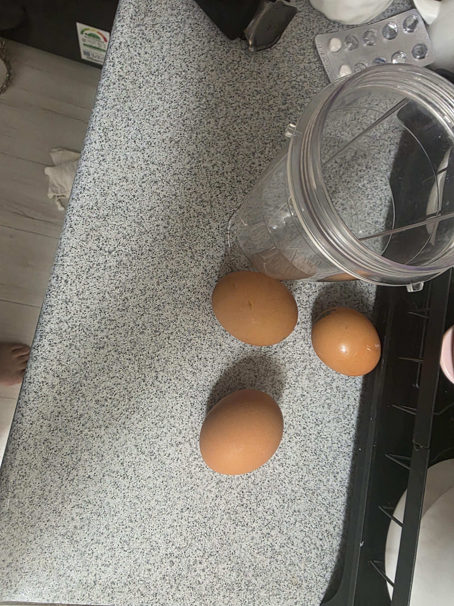
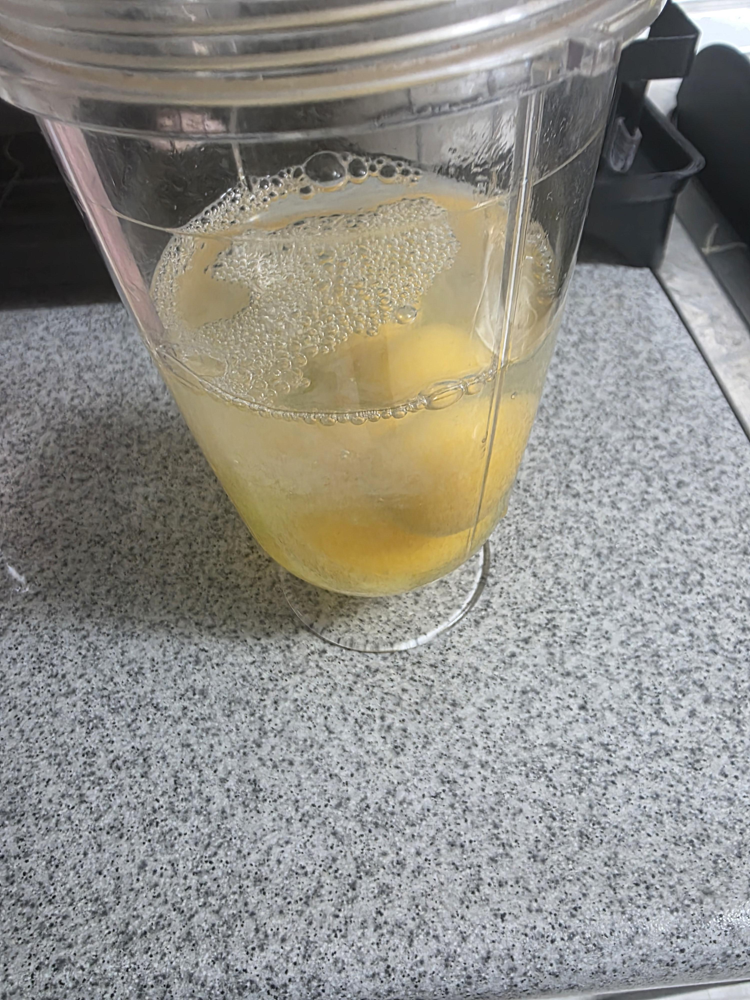
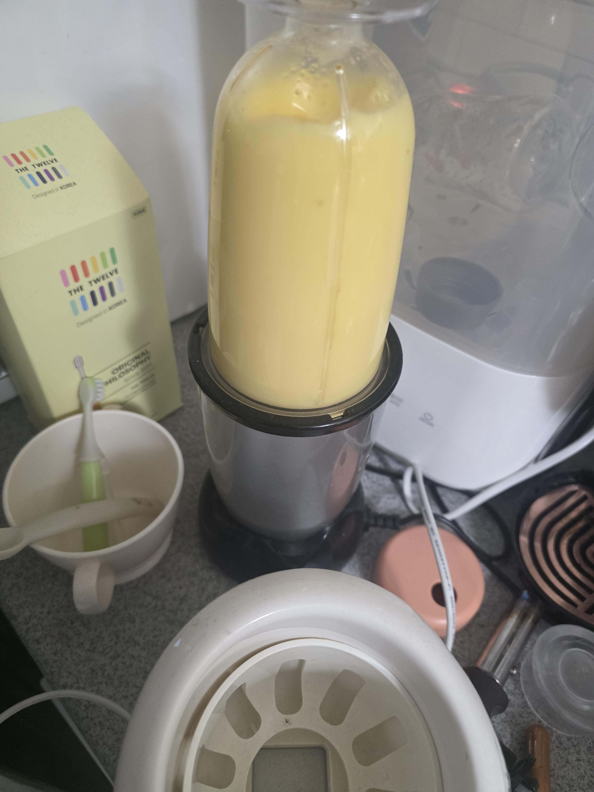
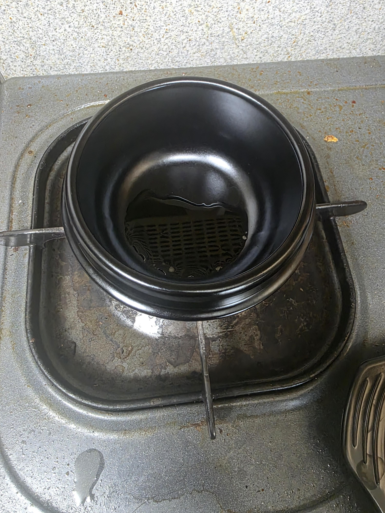
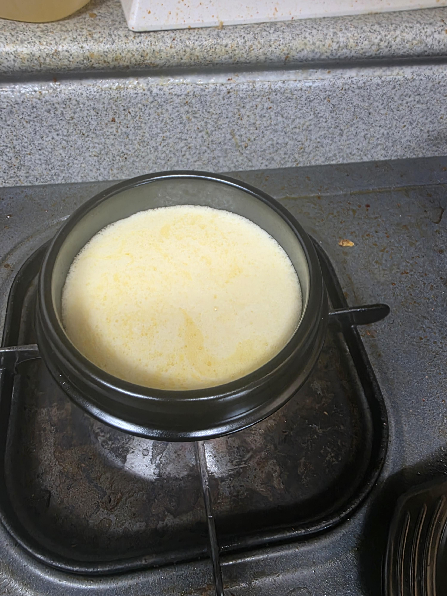
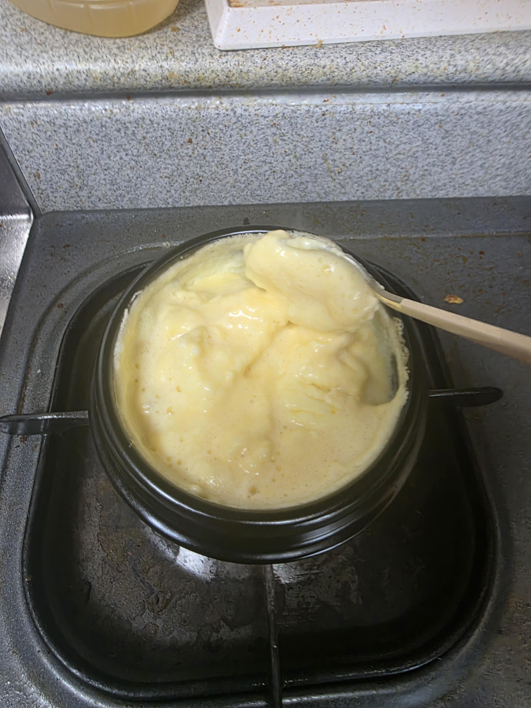
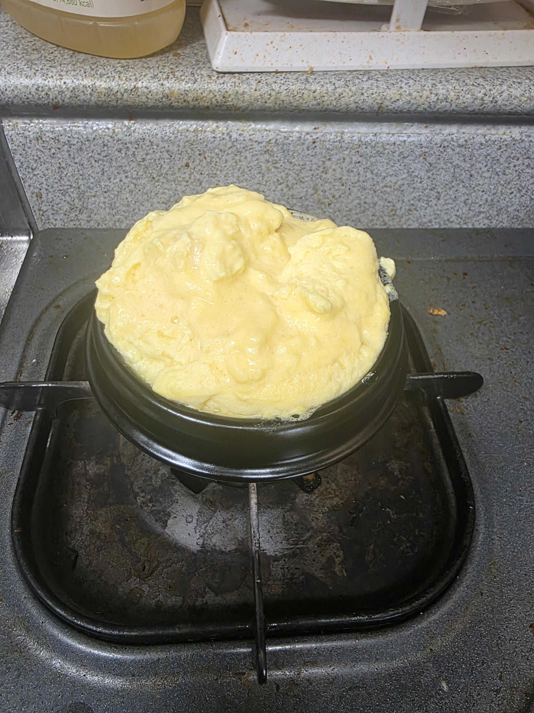

례란 왕란 3개

계란의 반만큼 물 넣어주고
새우젓1t
다시다 미원 한꼬집

믹서기 갈갈갈

뚝배기 데워서 참기름 한숟갈

뚝배기에 이정도 부어주면 됨
그리고 긁어주기 시작할때 약불로 낮추고 긁어주는데 언제까지?

이정도로 몽글몽글해질땤가지(약 70~80퍼)
이때 불끔

기다려주면 완성!!
저번에 달았던 댓글 사진까지 첨부해서 올려봄
어디 공중화장실에서 조리했음?
다음부턴 집에서하는걸 올려 보기 힘들다